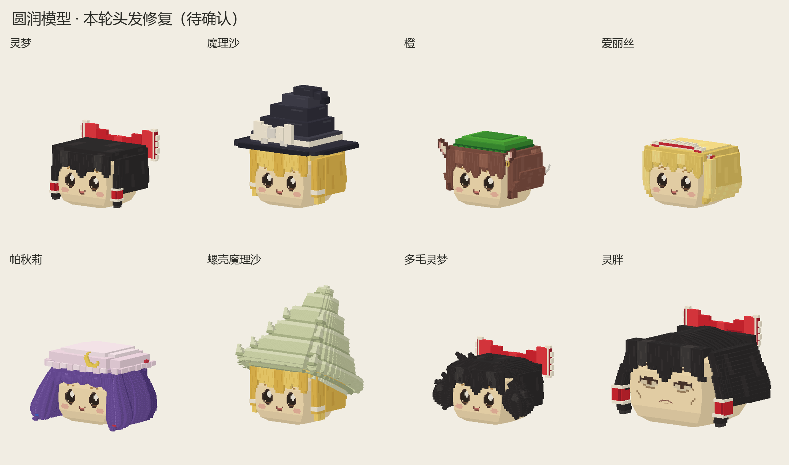

圆润标准体型 · 已保存
2026-09-13 · 标准体型
普通种、螺壳种、多毛种与灵胖共用已确认的圆润身体；蕾米莉亚／弗兰原有身体已符合。灵胖身体为普通灵梦的 1.5 倍，蝴蝶结保持普通灵梦大小；成熟面容及缩小的蝴蝶结待确认。家油、DOS、不足油保持原体型。拖动画面转向，滚轮缩放；可暂停、拖动时间查看动作。
查看全部油库里模型与本轮头发修复：背发已补足贴合余量并随身体分段摆动，灵胖刘海发根已补齐；头发修订待确认。
油菊在后部常态显示。两个伸缩部件位于同一前下方位置，默认收回，切换时先完整收回；胎生期间仅使用麻姆麻姆出口。当前体型已保存。
标准说明全部动作与标准表情可编辑模型当前角色四视图
普通灵梦与灵胖 · 同镜头大小对照
八种角色总览
